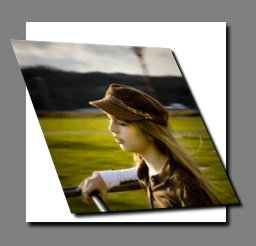
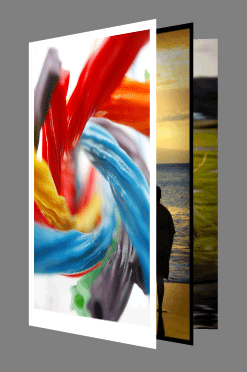
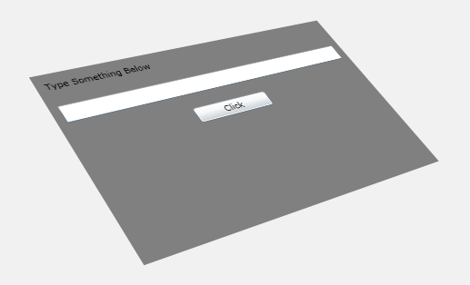
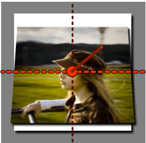
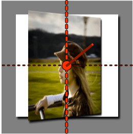
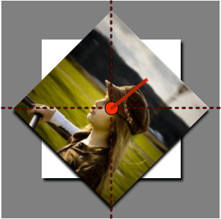
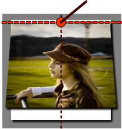
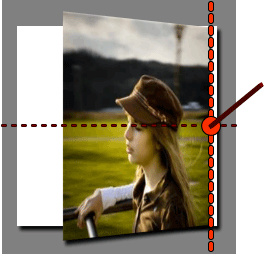

3-D perspective effects for XAML UI
You can apply 3-D effects to content in your Windows Runtime apps using perspective transforms. For example, you can create the illusion that an object is rotated toward or away from you, as shown here.

Another common usage for perspective transforms is to arrange objects in relation to one another to create a 3-D effect, as here.

Besides creating static 3-D effects, you can animate the perspective transform properties to create moving 3-D effects.
You just saw perspective transforms applied to images, but you can apply these effects to any UIElement, including controls. For example, you can apply a 3-D effect to an entire container of controls like this:

Here is the XAML code used to create this sample:
<StackPanel Margin="35" Background="Gray">
<StackPanel.Projection>
<PlaneProjection RotationX="-35" RotationY="-35" RotationZ="15" />
</StackPanel.Projection>
<TextBlock Margin="10">Type Something Below</TextBlock>
<TextBox Margin="10"></TextBox>
<Button Margin="10" Content="Click" Width="100" />
</StackPanel>
Here we focus on the properties of PlaneProjection which is used to rotate and move objects in 3-D space. The next sample allows you to experiment with these properties and see their effect on an object.
PlaneProjection class
You can apply 3D effects can to any UIElement, by setting the UIElement's Projection property using a PlaneProjection. The PlaneProjection defines how the transform is rendered in space. The next example shows a simple case.
<Image Source="kid.png">
<Image.Projection>
<PlaneProjection RotationX="-35" />
</Image.Projection>
</Image>
This figure shows what the image renders as. The x-axis, y-axis, and z-axis are shown as red lines. The image is rotated backward 35 degrees around the x-axis using the RotationX property.

The RotationY property rotates around the y-axis of the center of rotation.
<Image Source="kid.png">
<Image.Projection>
<PlaneProjection RotationY="-35" />
</Image.Projection>
</Image>

The RotationZ property rotates around the z-axis of the center of rotation (a line that is perpendicular to the plane of the object).
<Image Source="kid.png">
<Image.Projection>
<PlaneProjection RotationZ="-45"/>
</Image.Projection>
</Image>

The rotation properties can specify a positive or negative value to rotate in either direction. The absolute number can be greater than 360, which rotates the object more than one full rotation.
You can move the center of rotation by using the CenterOfRotationX, CenterOfRotationY, and CenterOfRotationZ properties. By default, the axes of rotation run directly through the center of the object, causing the object to rotate around its center. But if you move the center of rotation to the outer edge of the object, it will rotate around that edge. The default values for CenterOfRotationX and CenterOfRotationY are 0.5, and the default value for CenterOfRotationZ is 0. For CenterOfRotationX and CenterOfRotationY, values between 0 and 1 set the pivot point at some location within the object. A value of 0 denotes one object edge and 1 denotes the opposite edge. Values outside of this range are allowed and will move the center of rotation accordingly. Because the z-axis of the center of rotation is drawn through the plane of the object, you can move the center of rotation behind the object using a negative number and in front of the object (toward you) using a positive number.
CenterOfRotationX moves the center of rotation along the x-axis parallel to the object while CenterOfRotationY moves the center or rotation along the y-axis of the object. The next illustrations demonstrate using different values for CenterOfRotationY.
<Image Source="kid.png">
<Image.Projection>
<PlaneProjection RotationX="-35" CenterOfRotationY="0.5" />
</Image.Projection>
</Image>
CenterOfRotationY = "0.5" (default)
<Image Source="kid.png">
<Image.Projection>
<PlaneProjection RotationX="-35" CenterOfRotationY="0.1"/>
</Image.Projection>
</Image>
CenterOfRotationY = "0.1"

Notice how the image rotates around the center when the CenterOfRotationY property is set to the default value of 0.5 and rotates near the upper edge when set to 0.1. You see similar behavior when changing the CenterOfRotationX property to move where the RotationY property rotates the object.
<Image Source="kid.png">
<Image.Projection>
<PlaneProjection RotationY="-35" CenterOfRotationX="0.5" />
</Image.Projection>
</Image>
CenterOfRotationX = "0.5" (default)
<Image Source="kid.png">
<Image.Projection>
<PlaneProjection RotationY="-35" CenterOfRotationX="0.5" />
</Image.Projection>
</Image>
CenterOfRotationX = "0.9" (right-hand edge)

Use the CenterOfRotationZ to place the center of rotation above or below the plane of the object. This way, you can rotate the object around the point analogous to a planet orbiting around a star.
Positioning an object
So far, you learned how to rotate an object in space. You can position these rotated objects in space relative to one another by using these properties:
- LocalOffsetX moves an object along the x-axis of the plane of a rotated object.
- LocalOffsetY moves an object along the y-axis of the plane of a rotated object.
- LocalOffsetZ moves an object along the z-axis of the plane of a rotated object.
- GlobalOffsetX moves an object along the screen-aligned x-axis.
- GlobalOffsetY moves an object along the screen-aligned y-axis.
- GlobalOffsetZ moves an object along the screen-aligned z-axis.
Local offset
The LocalOffsetX, LocalOffsetY, and LocalOffsetZ properties translate an object along the respective axis of the plane of the object after it has been rotated. Therefore, the rotation of the object determines the direction that the object is translated. To demonstrate this concept, the next sample animates LocalOffsetX from 0 to 400 and RotationY from 0 to 65 degrees.
Notice in the preceding sample that the object is moving along its own x-axis. At the very beginning of the animation, when the RotationY value is near zero (parallel to the screen), the object moves along the screen in the x direction, but as the object rotates toward you, the object moves along the x-axis of the plane of the object toward you. On the other hand, if you animated the RotationY property to -65 degrees, the object would curve away from you.
LocalOffsetY works similarly to LocalOffsetX, except that it moves along the vertical axis, so changing RotationX affects the direction LocalOffsetY moves the object. In the next sample, LocalOffsetY is animated from 0 to 400 and RotationX from 0 to 65 degrees.
LocalOffsetZ translates the object perpendicular to the plane of the object as though a vector was drawn directly through the center from behind the object out toward you. To demonstrate how LocalOffsetZ works, the next sample animates LocalOffsetZ from 0 to 400 and RotationX from 0 to 65 degrees.
At the beginning of the animation, when the RotationX value is near zero (parallel to the screen), the object moves directly out toward you, but as the face of the object rotates down, the object moves down instead.
Global offset
The GlobalOffsetX, GlobalOffsetY, and GlobalOffsetZ properties translate the object along axes relative to the screen. That is, unlike the local offset properties, the axis the object moves along is independent of any rotation applied to the object. These properties are useful when you want to simply move the object along the x-, y-, or z-axis of the screen without worrying about the rotation applied to the object.
The next sample animates GlobalOffsetX from 0 to 400 and RotationY from 0 to 65 degrees.
Notice in this sample that the object does not change course as it rotates. That is because the object is being moved along the x-axis of the screen without regard to its rotation.
More complex semi-3D scenarios
You can use the Matrix3DProjection and Matrix3D types for more complex semi-3D scenarios than are possible with the PlaneProjection. Matrix3DProjection provides you with a complete 3D transform matrix to apply to any UIElement, so that you can apply arbitrary model transformation matrices and perspective matrices to elements. Keep in mind that these API are minimal and therefore if you use them, you will need to write the code that correctly creates the 3D transform matrices. Because of this, it is easier to use PlaneProjection for simple 3D scenarios.